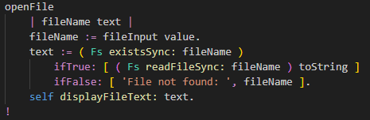

NW.js apps can use Node.js featues, like reading files.
This is the main advantage of it begin a desktop app that runs in Node.js
Browser apps cannot do this, because of security reasons.
(Opening a file in a browser always requires user confirmation)
With this great power comes great responsibility to keep it secure.
You must ensure that all app files are controlled by yourself.
Specifically it is often not safe to fetch GUI HTML files from the web.
Keep them as local files, bundeled with the app.
Scroll down to the method
openFile that looks like this:

You can see the the regular Node
Fs classes is used to read the file,
just like in any other Node app.
Then the file text is displayed in our GUI.